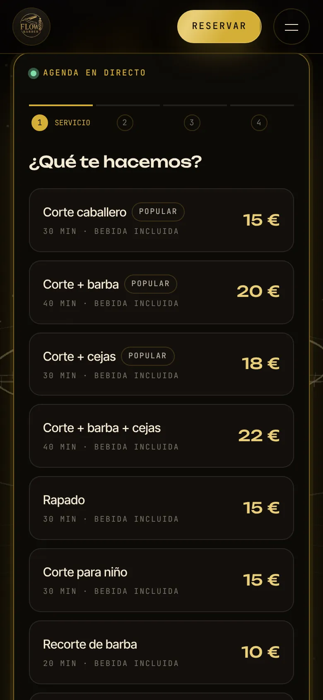
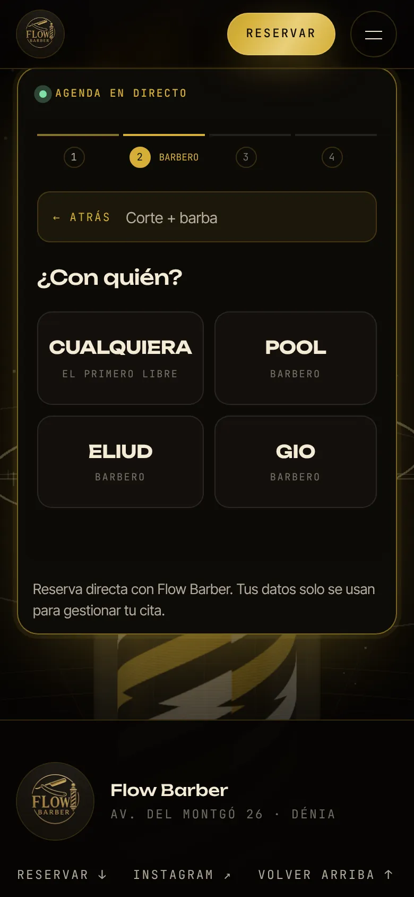
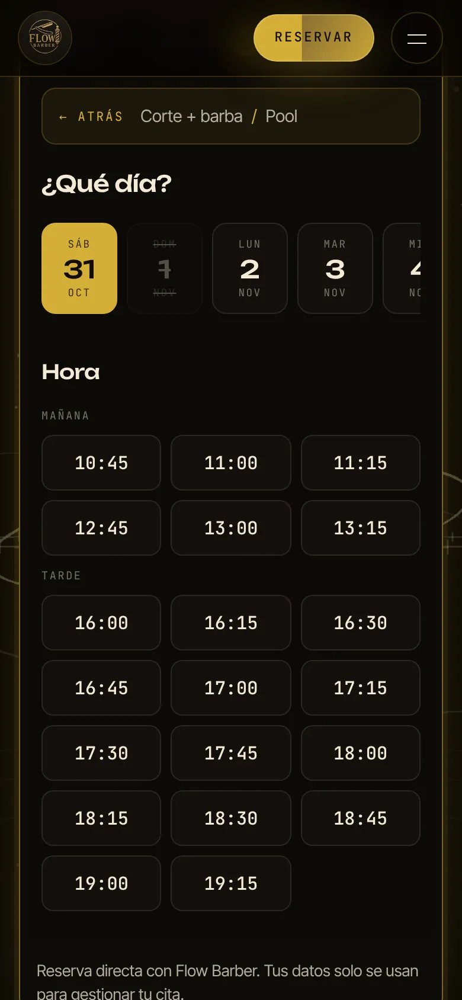
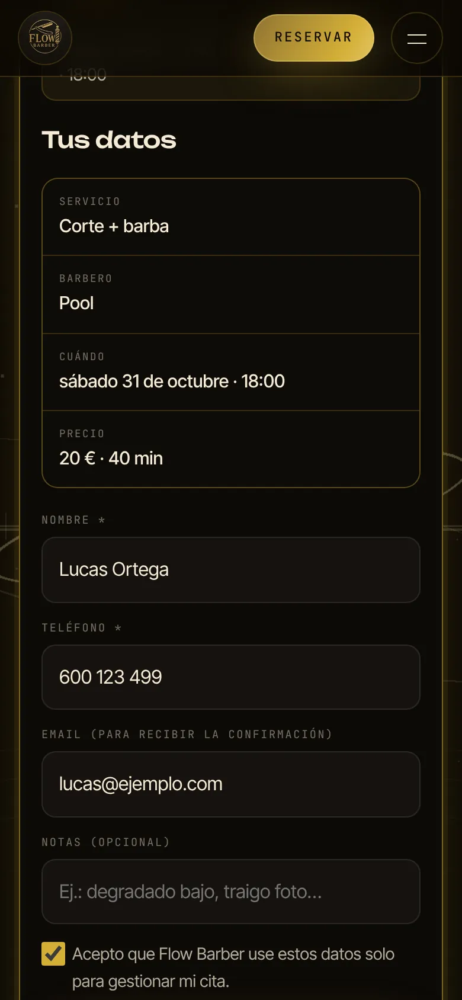
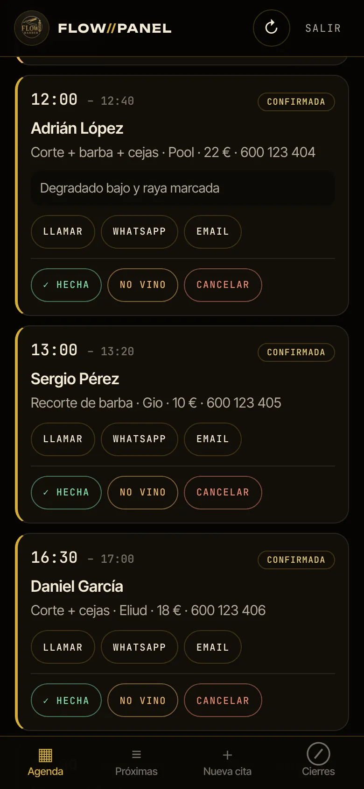
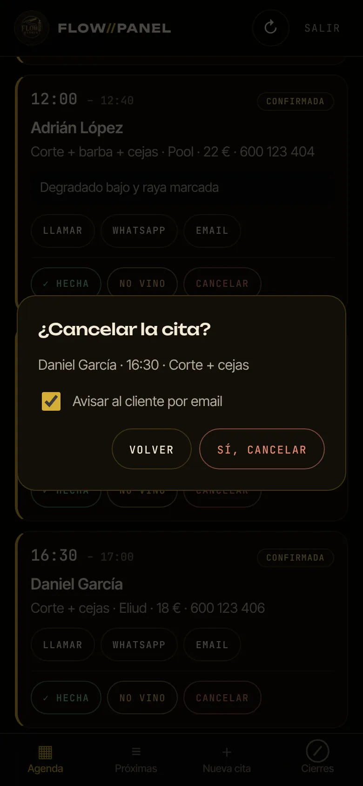
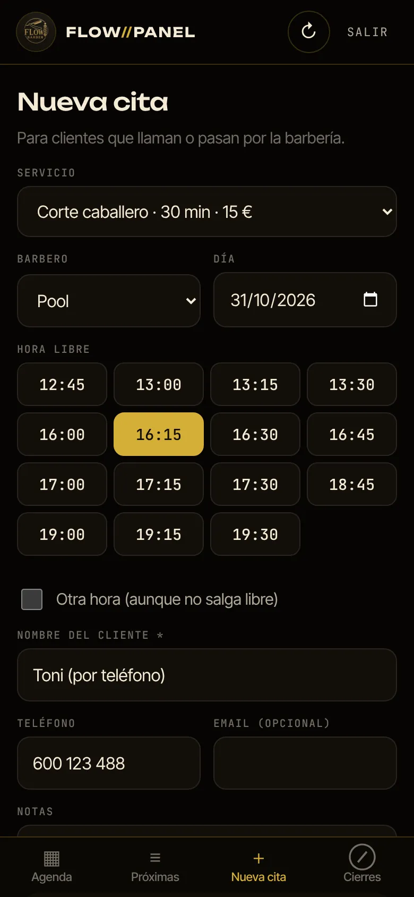
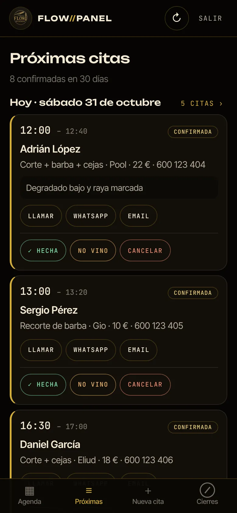
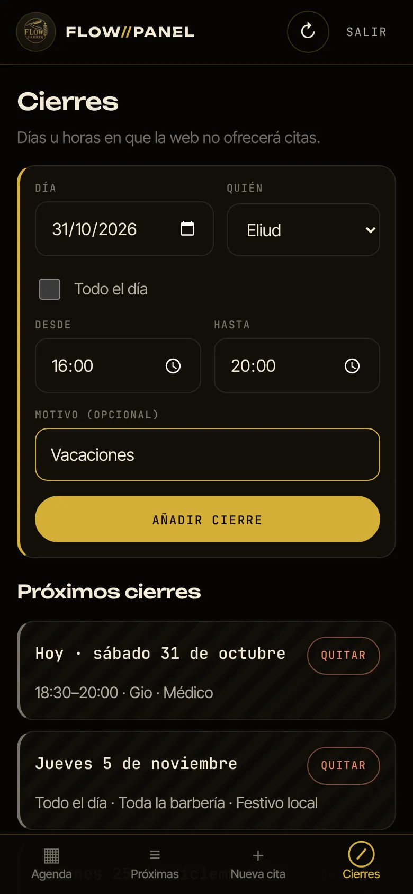
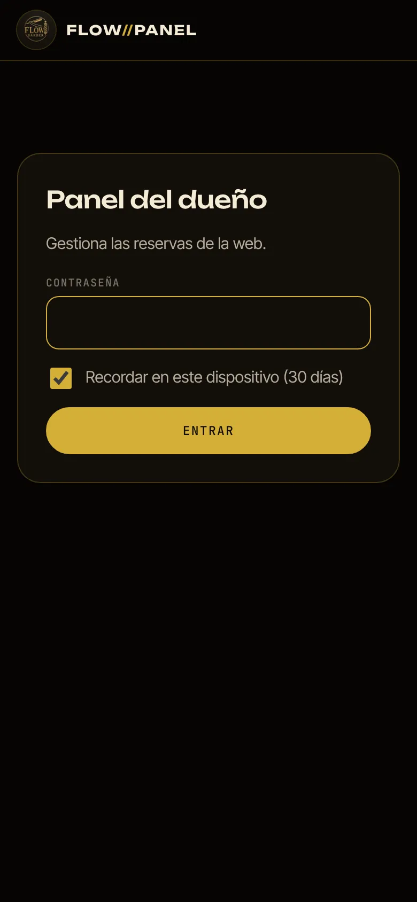

Reserva en 4 pasos
Servicio, barbero, día y hora, y sus datos. Sin descargar apps ni crear cuentas.
Propuesta para Flow Barber
Un sistema de reservas propio, dentro de la web de Flow Barber. Los clientes reservan sin intermediarios y tú lo gestionas todo desde el móvil. Sin cuotas mensuales ni comisiones.
* Funciona con una cuenta gratuita de Google (Sheets, Calendar y Gmail).
Las capturas de esta página son del sistema real funcionando, con datos de ejemplo: los clientes son inventados.
01 — Qué incluye
Servicio, barbero, día y hora, y sus datos. Sin descargar apps ni crear cuentas.
La web calcula los huecos según el horario, la duración de cada servicio y las citas de cada barbero. Nadie puede reservar una hora ya ocupada.
El cliente recibe su cita por email con un enlace para cancelar. Tú recibes un aviso de cada reserva y de cada cancelación.
Cada cita aparece sola en el calendario de la barbería, y puedes compartirlo con los barberos.
La agenda del día, las próximas citas, las citas por teléfono y los cierres, todo desde el móvil y con contraseña.
Cierra un día entero o unas horas, para toda la barbería o para un barbero, y la web deja de ofrecer esos huecos.
02 — Así reserva el cliente
Desde la sección «Reserva» de la web, con el mismo diseño. Desliza para ver cada paso.




El email que recibe el cliente (texto real generado por el sistema)
De Flow Barber
Asunto Tu cita en Flow Barber: sábado 31 de octubre a las 18:00
Hola Lucas Ortega, Tu cita está confirmada. Corte + barba con Pool sábado 31 de octubre a las 18:00 (40 min) 20 € · pago en el local Avinguda del Montgó, 26, 03700 Dénia Si no puedes venir, cancela aquí: enlace personal para cancelar Gracias, Flow Barber
03 — Así lo gestionas tú
Una página privada con contraseña, pensada para el móvil. Se puede guardar en la pantalla de inicio como si fuera una app.






Y todo queda guardado en una hoja de Google de la barbería (ejemplo de cómo se ordena)
| ID | Estado | Fecha | Hora | Servicio | Precio € | Barbero | Nombre | Teléfono |
|---|---|---|---|---|---|---|---|---|
| FB-261031-… | Completada | 2026-10-31 | 10:00 | Corte + barba | 20 | Pool | Carlos Martín | 600 123 401 |
| FB-261031-… | Confirmada | 2026-10-31 | 12:00 | Corte + barba + cejas | 22 | Pool | Adrián López | 600 123 404 |
| FB-261031-… | Cancelada | 2026-10-31 | 17:00 | Rapado | 15 | Pool | Marcos Vidal | 600 123 407 |
La hoja también tiene una pestaña Bloqueos para los cierres. Se puede abrir, filtrar o exportar a Excel cuando quieras.
04 — Instalación
Se hace una sola vez, mejor desde un ordenador.
Con la cuenta de Google de la barbería, abre sheets.new. Se crea una hoja en blanco: ponle de nombre Flow Barber — Reservas.
En la hoja: menú Extensiones → Apps Script. Borra lo que haya en el editor y pega el programa de reservas que te entregamos (Code.gs).
En la línea adminPassword: "" escribe la contraseña del panel: larga y que no uses en otro sitio. Guarda (icono del disquete).
Arriba, elige la función setup y pulsa ▶ Ejecutar. Google pedirá permiso para usar la hoja, el calendario y el email.
Al volver a la hoja verás dos pestañas nuevas: Reservas y Bloqueos.
Implementar → Nueva implementación → tipo Aplicación web.
Pulsa Implementar y copia la URL de la aplicación web, que termina en /exec.
Envíanos esa URL. La conectamos a la web y hacemos una reserva de prueba contigo. Desde ese momento:
Guía completa ↗ Programa de reservas (Code.gs) ↗
En el panel del dueño o en tu Google Calendar.
Compartes el Google Calendar con su email.
Se cambian en el programa y en la web. Te lo hacemos nosotros o te explicamos cómo.
Los datos se quedan en la cuenta de Google de la barbería. Conviene borrar de vez en cuando las citas antiguas.
05 — Preguntas
Nada. Usa los servicios gratuitos de Google: Sheets para guardar, Calendar para la agenda y Gmail para los emails. Una cuenta gratuita permite unos 100 emails al día, de sobra para una barbería.
La web no depende de Booksy en nada. Puedes mantenerlo un tiempo o darte de baja. Si te das de baja, pierdes el perfil que tienes allí con sus reseñas, y los clientes que te encuentran desde la app de Booksy.
Si dejó su email, cancela con el enlace del email y el hueco se libera solo. Si no, te avisa y la cancelas tú desde el panel.
Ahora mismo no. El cliente recibe la confirmación por email al reservar. Se puede añadir un recordatorio por email el día antes.
No está incluido: el pago es en el local, como ahora.
No. Cada reserva se comprueba en el momento de confirmar. Si alguien acaba de coger ese hueco, la web pide elegir otra hora.
Si falla el calendario o el email, la cita se guarda igual en la hoja. Si Google entero no responde, que es muy raro, la web avisa al cliente de que lo intente de nuevo.
La barbería: se guardan en su cuenta de Google. El cliente acepta una casilla de uso de datos al reservar. Conviene tener también un aviso de privacidad en la web.
06 — Siguiente paso